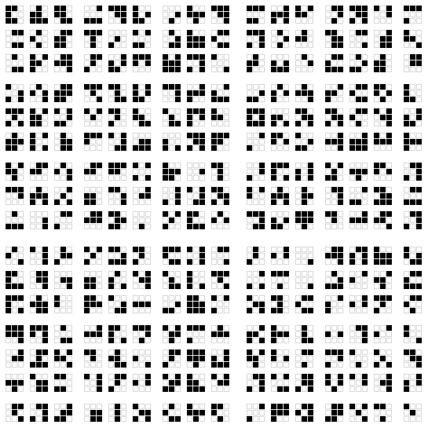
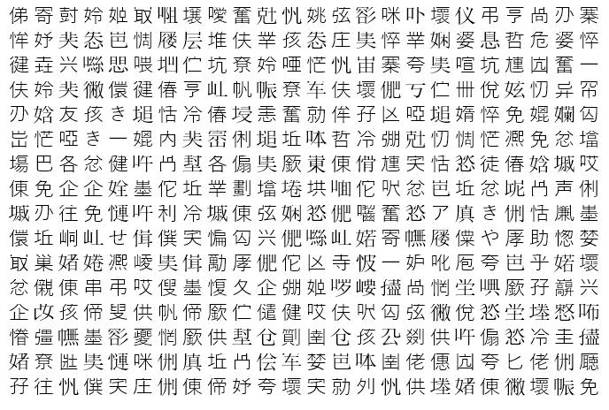
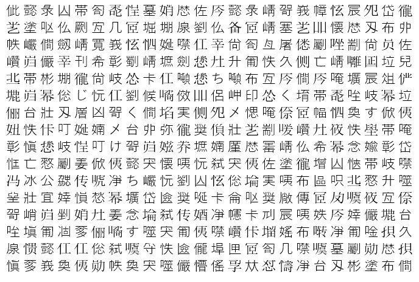

Konomi · the tongue the agents grow
A language grown from what the estate's agents actually say, measured in Claude tokens against Simon's 15×: a nested glyph dictionary, a shared JSON schema, and a picture channel read back blind.
3 of 11 sealed rules held.
Grown to 4723 glyphs, the tongue carried the held-out agent messages in 1.05× fewer Claude tokens and the held-out JSON in 2.72×, against Simon's 15×. Drawn as a picture, the best arm carried 0 bits per token read back at ≥99%, against 6.98 for the best text; the coded messages drawn as pictures came to 2.07× of their English tokens.
| rule | result | predicted before the run | |
|---|---|---|---|
| held-out agent messages cost at least 15× fewer Claude tokens coded with the grown dictionary (the reader already holding it) | held-out agent messages 1.05× with the grown dictionary held (4723 glyphs) | FAIL | fail — about 2–3×: most of a new message is new information, and a dictionary only saves what recurs |
| the ratio climbs at every step of the growth curve | 0: 1× → 64: 1.01× → 256: 1.03× → 1024: 1.04× → 4096: 1.05× → 4723: 1.05× | FAIL | pass |
| every held-out message decodes back exactly | 22 of 22 held-out messages decode exactly | PASS | pass |
| Claude, given the legend, decodes at least 6 of the 8 sampled coded messages exactly | 2 of 8 decoded exactly by Claude from the legend | FAIL | fail — a long flat legend invites slips; 2–4 of 8 exact |
| the held-out JSON costs at least 15× fewer Claude tokens coded with the shared schema (held) | held-out JSON 2.72× with the shared schema held (2076 glyphs) | FAIL | fail — about 4–8×: the shopper records shed their keys, but numbers do not shrink |
| every held-out JSON file decodes back to its exact minified JSON | 6 of 6 held-out files decode exactly | PASS | pass |
| the best picture arm carries more bits per token, read back at ≥99%, than the best text encoding of the same bits | best picture 0 bits/token vs best text 6.98 | FAIL | pass — familiar glyphs at 10–14 px near 25–45 bits per token, against about 10–15 for text |
| familiar glyphs (arm B or C) carry more bits per token than raw dots (arm A) | familiar glyphs 0 vs raw dots 0 bits/token | FAIL | pass — raw dots will not hold 99% below the largest size |
| the evolved glyphs (arm C) carry more bits per token than the familiar ones (arm B) | evolved 0 vs familiar 0 bits/token | FAIL | fail — two generations rarely buy a whole size step |
| the coded messages drawn as pictures cost at least 15× fewer tokens than the plain English, every one read back at ≥99% | plain English ÷ picture of the coded message 2.07× at ≥99% read-back | FAIL | fail — about 4–7× |
| CI re-grades every recorded read, rebuilds the JSON channel from the committed files and re-derives every number from the record | CI re-grades every read and re-derives every number from the record; the JSON channel is rebuilt from committed files | PASS | pass |
Held-out agent messages (22, never seen while the dictionary grew): plain Claude tokens ÷ coded Claude tokens, as the dictionary grows. The reader holds the dictionary; holding it costs 44319 tokens nested (78822 unfolded), once. Glyphs nest 57 deep at most. Every held-out message decodes back exactly: 22 of 22.
Can Claude read it? 8 coded held-out messages, each given to Claude with the unfolded legend: 2 decoded exactly; the median character match was 14%.
Held-out estate JSON (each repo's most recently committed data file, plus 300 November–December shopper sessions as records): minified JSON tokens ÷ coded tokens, as the shared schema grows (61 schemas, 723 keys, 1292 strings; holding it costs 46267 tokens). Every file decodes back exactly: 6 of 6.
| held-out file | JSON tokens | coded | |
|---|---|---|---|
| fallkard-forge · uv-run.json | 3037 | 2352 | 1.29× |
| fallworld · compliance.decl.json | 235 | 232 | 1.01× |
| kar-mind · codec-run.json | 1379 | 1297 | 1.06× |
| kard-evolve · observe-prereg.json | 1631 | 1520 | 1.07× |
| pattern-organs · verdict.json | 3230 | 2191 | 1.47× |
| sessions · nov-dec.json | 55002 | 16148 | 3.41× |
Payloads drawn at shrinking sizes and read back blind by claude-sonnet-5-5. Bits per token counts only where every held-out image read back at ≥99%. The best text encoding of the same bits: base64 6.58, hex 6.14, one-token glyphs 6.98 bits per token.
| arm | size | read back | image tokens | bits per token |
|---|---|---|---|---|
| A · raw dots | 8 px | 50.7% | 487 | — |
| A · raw dots | 6 px | 50.5% | 327 | — |
| A · raw dots | 4 px | 41.8% | 172 | — |
| A · raw dots | 3 px | 23.6% | 103 | — |
| A · raw dots | 2 px | 50.3% | 67 | — |
| B · familiar glyphs | 28 px | 35.3% | 428 | — |
| B · familiar glyphs | 20 px | 5.6% | 219 | — |
| B · familiar glyphs | 14 px | 0.3% | 120 | — |
| B · familiar glyphs | 10 px | 0% | 73 | — |
| B · familiar glyphs | 8 px | 0.1% | 51 | — |
| C · glyphs evolved against misreads | 28 px | 38.5% | 428 | — |
| C · glyphs evolved against misreads | 20 px | 4.2% | 219 | — |
| C · glyphs evolved against misreads | 14 px | 0.1% | 120 | — |
| C · glyphs evolved against misreads | 10 px | 0% | 73 | — |
| C · glyphs evolved against misreads | 8 px | 0.1% | 51 | — |
Nesting (raw dots in blocks of 3, blocks of blocks …, 6 px dots): depth 1 (9 dots) 61% · depth 2 (81 dots) 60% · depth 3 (729 dots) 52% · depth 4 (6561 dots) 0%.



The held-out messages cost 16580 Claude tokens plain; the grown dictionary saved 751 of them (4.5%). Four things hold it back. New information: most of what an agent says has not been said before, and a dictionary only saves what recurs. Cheap glyphs are scarce: of the 4723 glyphs the tongue could write, only 166 were planned at one token, so a two-token glyph pays only for a phrase of three tokens or more — and Claude's tokenizer already spends about one token on a common English word. Holding the dictionary costs 44319 tokens, more than the held-out messages themselves. And Claude decoded 2 of 8 coded messages exactly. In pictures, dense grids of random symbols — raw dots or kanji — never read back at 99% at any size tried; plain text drawn at 12 px did, and that is where the picture gain comes from.
6 held-out messages, coded with the full dictionary and drawn as text: 6 read back at ≥99%. Plain English tokens ÷ image tokens: 2.07×.
Every candidate glyph counted in Claude tokens through the CLI before anything else. The text channel writes only one- and two-token kanji and kana; everything dearer only pays in pictures.
| source | priced | tokens each |
|---|---|---|
| seed | 163 | 65 at 1, 64 at 2, 26 at 3, 6 at 4, 2 at 5 |
| light | 48 | 8 at 2, 38 at 3, 2 at 4 |
| cuneiform | 922 | 922 at 4 |
| kanji | 1024 | 153 at 1, 871 at 2 |
| kana | 176 | 28 at 1, 56 at 2, 42 at 3, 50 at 4 |
| kanji-wide | 3648 | 3648 at 2 |
| glyph | LIGHT opcode | prime | Claude tokens |
|---|---|---|---|
| ⚫ | NOP | 2 | 3 |
| 🔻 | LD | 3 | 3 |
| 🔺 | ST | 5 | 3 |
| 🌊 | ADD | 7 | 3 |
| 🔍 | MUL | 11 | 3 |
| 🔮 | ATT | 13 | 3 |
| 🌈 | VAL | 17 | 3 |
| 💠 | PLN | 19 | 2 |
| 🪢 | MDL | 23 | 3 |
| 👁 | OBS | 29 | 2 |
| ⚡ | JMP | 31 | 3 |
| ⚖️ | CMP | 37 | 4 |
| 🎵 | JEQ | 41 | 3 |
| 💥 | JNE | 43 | 2 |
| 📈 | JGT | 47 | 2 |
| 🚨 | INT | 53 | 3 |
| 🔽 | REC | 59 | 3 |
| 🔼 | UNR | 61 | 3 |
| 💡 | EMT | 67 | 2 |
| 🎛 | RSN | 71 | 3 |
| 🌑 | SLP | 73 | 3 |
| ✨ | DRM | 79 | 2 |
| ☀️ | WAK | 83 | 3 |
| 🧯 | ABT | 89 | 3 |
| 🧊 | FRZ | 97 | 3 |
| 🫧 | CLR | 101 | 3 |
| ☠️ | DIE | 103 | 3 |
| 🔱 | GEO | 107 | 3 |
| 🌀 | PHI | 109 | 3 |
| ♾️ | PSI | 113 | 3 |
| 🔄 | TRT | 127 | 3 |
| 🪞 | TNE | 131 | 3 |
| 🤝 | TAN | 137 | 3 |
| 🫱 | TOR | 139 | 3 |
| 🗳 | TCN | 149 | 3 |
| 📡 | TPV | 151 | 2 |
Rings: 🔴 MATERIAL 700 nm (3) · 🟠 WEAVE 630 nm (3) · 🟡 NODE 590 nm (3) · 🟢 ZONE 520 nm (3) · 🔵 PROTOCOL 470 nm (3) · 🟣 PRODUCT 405 nm (3) · ⚪ FACTORY 350 nm (3). Buses: 🧵 A (3) · ⚗️ B (4) · 🔦 C (3) · 📶 D (2) · 🔋 E (3). Registers 2 + 3 + 5 + 11 + 31 + 127 + 709 = 888. The whole legend: data/legend.json.
Sealed, committed and pushed before any held-out message is coded or any picture is read. The result is published whichever way it lands; where it falls short of 15×, this says how far it got and what limits it.
Text. units (words with one leading space, digit runs, whitespace runs, single characters) merged pair by pair: each round the 16 most valuable pairs that share no symbol (count × tokens saved, priced) become new glyphs, for 512 rounds or until the alphabet runs out; a glyph may hold glyphs (nesting). The curve is read at 0, 64, 256, 1024, 4096 glyphs and at the full dictionary.
JSON. a recurring ordered key list (schema), key or string value becomes one glyph; records write as S(v1,v2,…); every held-out file must decode to its exact minified JSON
Picture. arm A raw dots (48×48 black/white squares in nested blocks of 3, dot sizes 8/6/4/3/2 px); arm B familiar glyphs (24×16 grid of 256 one-token kanji spread across the priced range, cell sizes 28/20/14/10/8 px, Yu Gothic); arm C the same grid with the alphabet evolved two generations against the model's own training misreads (every misread glyph replaced by a fresh one-token kanji, seeded). 2 held-out images per arm and size, payloads seeded and never seen before the read. Bits per token = payload bits ÷ image tokens (the read's input tokens minus the same prompt without the image), at the smallest size where every held-out image reads back at ≥99%. Nesting depth curve: raw dots at 6 px, depth 1–4 (3^d × 3^d dots).
Both. 6 held-out messages (seeded) coded with the full dictionary and drawn as text at 16/12/9 px; each read back blind; the ratio is their English tokens ÷ the image tokens at each one's smallest size read back at ≥99% (whitespace runs count as one space)
The split. by time: every coordinator↔Kar message before 2026-10-01T12:00:00.000Z and every memory file last written before it trains the dictionary; every message at or after it is held out. The corpus stays on the laptop — only its sha256 and counts are published.
Before the seal: the glyph prices (their own measurement, committed), a plumbing check of the CLI image path on two images of known content (an 8-kanji grid read exactly; an 18-square dot grid misread — raw dots at 6 px with outlines), and the corpus counts. No held-out message was coded and no payload picture was read. The alphabet was decided by price. In Claude’s tokenizer: cuneiform 922 priced: 922 at 4 tokens; LIGHT’s opcodes, rings and buses 48 priced: 8 at 2 tokens, 38 at 3 tokens, 2 at 4 tokens; the seed’s glyphs 163 priced: 65 at 1 token, 64 at 2 tokens, 26 at 3 tokens, 6 at 4 tokens, 2 at 5 tokens; kanji U+4E00–U+51FF 1024 priced: 153 at 1 token, 871 at 2 tokens; kana 176 priced: 28 at 1 token, 56 at 2 tokens, 42 at 3 tokens, 50 at 4 tokens; kanji U+5200–U+61FF (batches only, admitted at ≤2 on average, planned as 2) 3648 priced: 3648 at 2 tokens. So the text channel writes kanji and kana; cuneiform and emoji only ever pay off in the picture channel, where a glyph costs area, not tokens. Pricing was stopped at these ranges for time (one CLI call per glyph is about 2.6 s). LIGHT (Thomas Frumkin, teslasolar/light, used with permission) has 36 opcodes in src/ops.js at the forked commit (its README says 38); its prime mapping is carried in the legend. The tongue's dictionary is modelled on LIGHT's templates (a whole program called by name); LIGHT's runtime itself is not on the measured path. A mock run of the whole pipeline (no paid calls: counts as characters ÷ 4, every reply empty, the 22 held-out messages replaced by the last 22 training messages) checked the plumbing end to end before the seal; it did touch the held-out JSON files, whose character ratio (3.45×, not tokens) was therefore seen. No prediction was changed after it. The 15× is Simon's target, sealed as the bar. Claude tokens are counted for claude-sonnet-5-5; the picture reads use the same model.
Sealed in 59d37fe · the pre-registration · the record · the prices
A language the estate's agents grow between themselves: a shared dictionary where the most valuable recurring pieces of what they actually say become glyphs, glyphs can hold glyphs, and JSON records shed their keys into a shared schema — plus a picture channel that draws symbols as images, which are billed by area rather than by token.
3 of 11 sealed rules held. Grown to 4723 glyphs, the tongue carried the held-out agent messages in 1.05× fewer Claude tokens and the held-out JSON in 2.72×, against Simon's 15×. Drawn as a picture, the best arm carried 0 bits per token read back at ≥99%, against 6.98 for the best text; the coded messages drawn as pictures came to 2.07× of their English tokens.
Price. Every candidate glyph was counted through the CLI first: in Claude's tokenizer a cuneiform sign costs 4 tokens and most emoji 3–4, while many kanji cost 1 or 2. Cuneiform and emoji can still pay in the picture channel, where a glyph costs area.
The prices, the corpus split, the channels, the rules and a prediction were committed before any held-out message was coded or any picture read (data/prereg.json). CI re-grades every recorded read and rebuilds the JSON channel on every push; this page re-grades the reads in your browser.
The tongue grows from the seed's memory law (compress, don't delete; compress by prime indices) and Thomas Frumkin's Konomi architecture and LIGHT language (36 prime-indexed opcodes; templates — a whole program called by name — are the model for the dictionary). Simon set the 15× target and the picture channel.